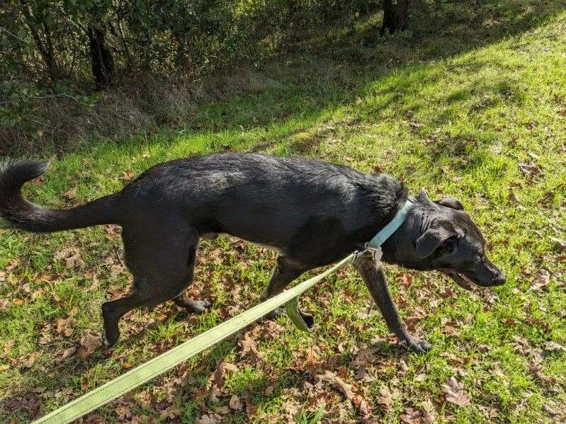

New year means time to talk taxes.

New year means time to talk taxes. And my two best financial advisors are here with some quick tips. Oban says first thing first is always diversify your barks. If you only bark at squirrels and no squirrels show up. That's a lot of wasted bark growth. And be sure to dip into tail wags and low growls(mostly at squirrels) to keep your bark-folio healthy.
Della cannot stress enough how unreliable banks are, and how easy it is to destroy money since it's made of paper. So restructuring your finances to have a large reserve of carrots is never a bad idea. She says not to worry about space cause carrots preserve perfectly when shallowly buried in the front yard. Or left at knee high levels.
Dad: Love this. Every time I read these and smile. Thank you